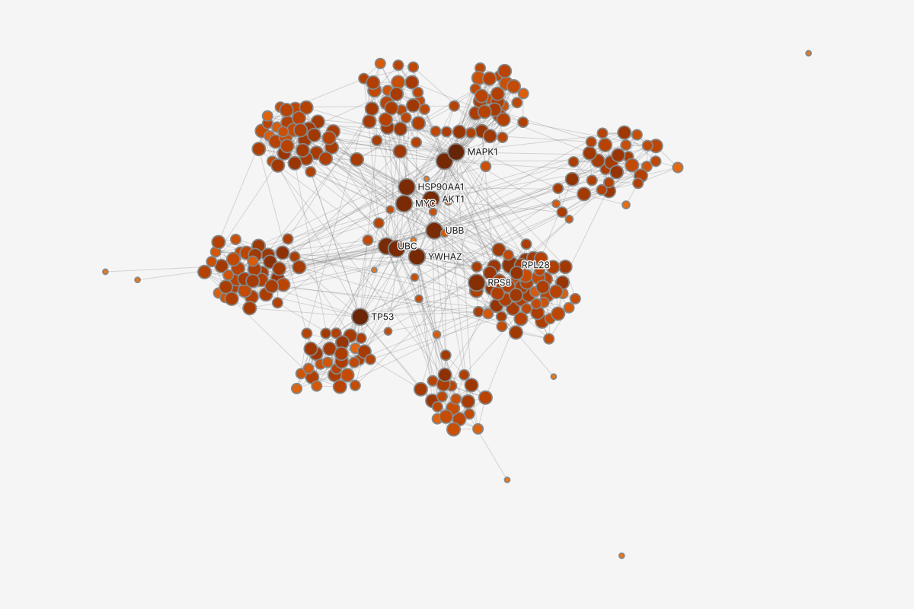
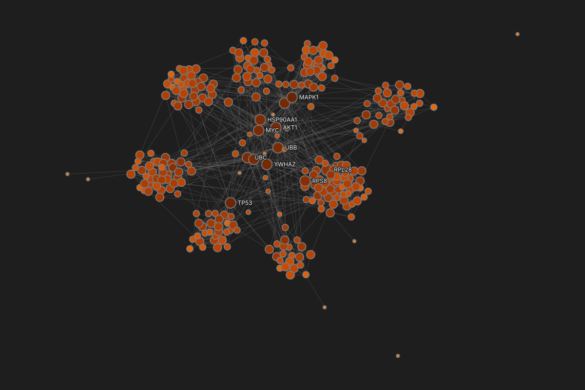
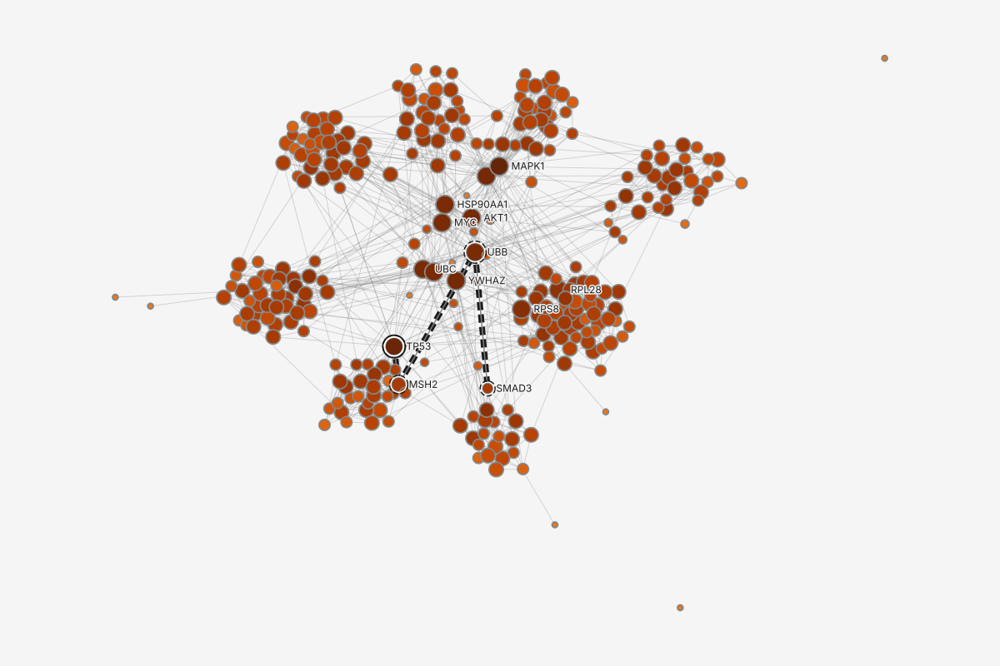
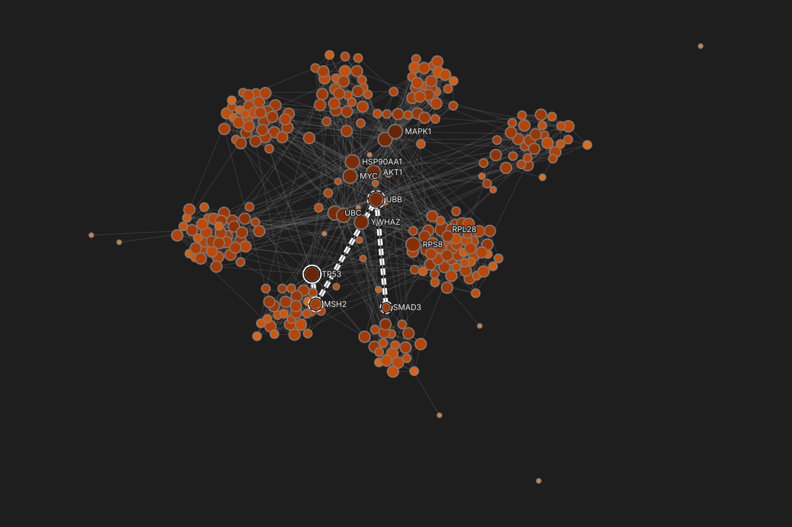
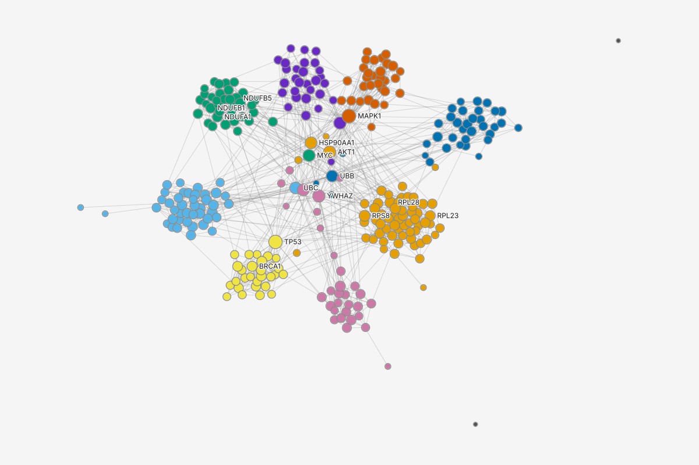
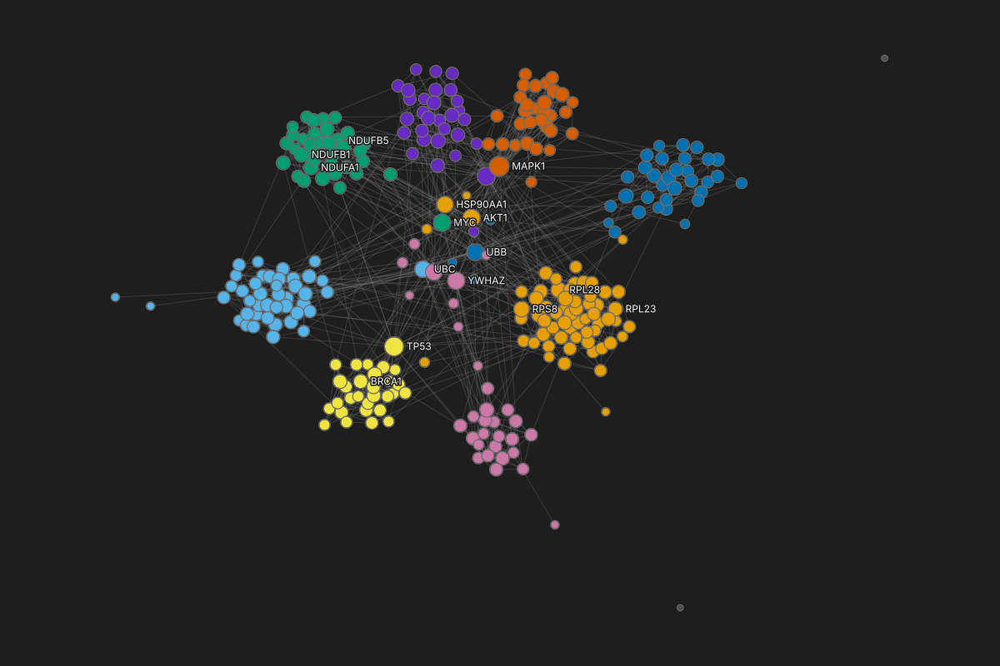
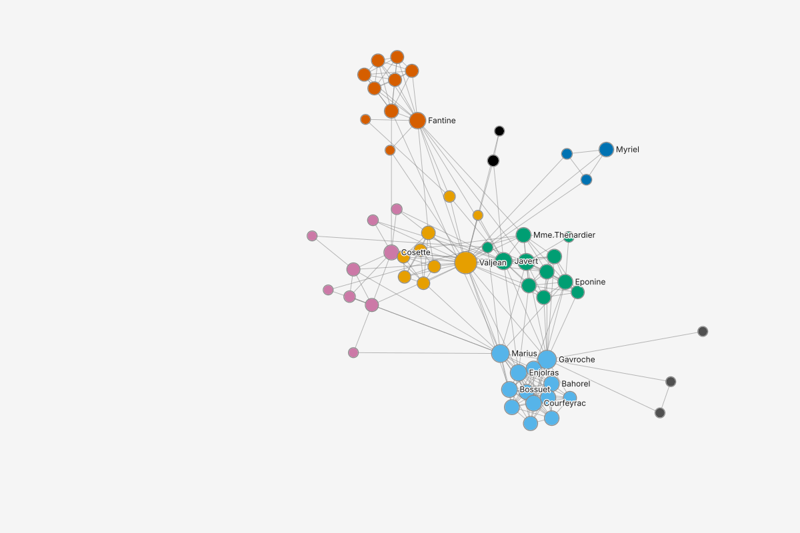
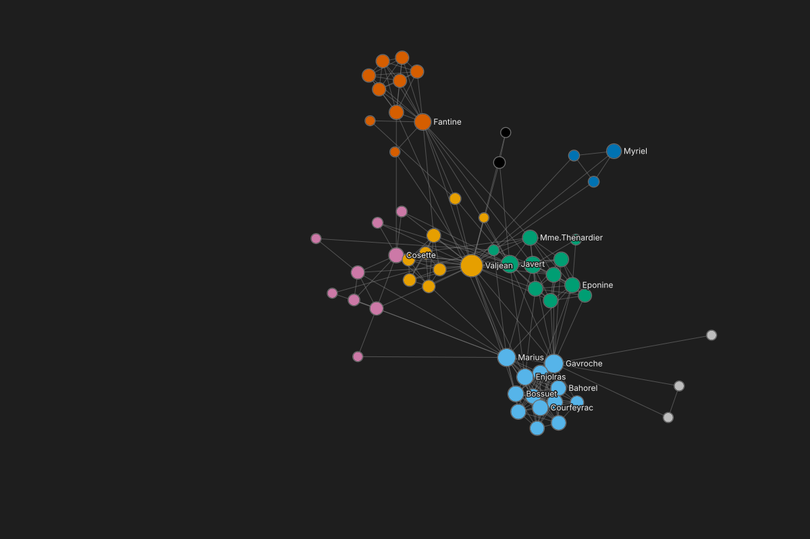
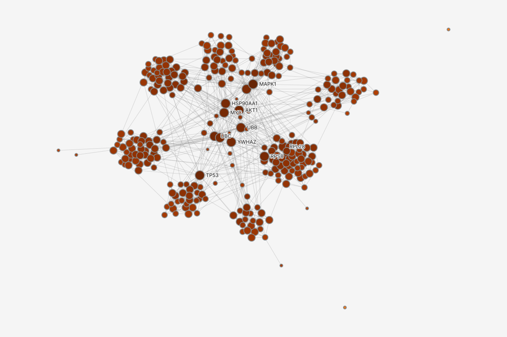

1The catalog: main menu, Algorithms, with its marks before any run‹›
Screen reader hears: "Algorithms, menu. Centrality. Betweenness." Arrow keys move; Enter starts the run and opens it in Results. On Closeness: "Closeness, WF-corrected." On Eigenvector: "Eigenvector, warning, 3 components." On Topological sort: "Topological sort, unavailable, needs direction."
Three ways in, one list: Results' own 'Run a measure...', the main menu's Algorithms (drawn here) and Quick actions (Ctrl+K) open the same catalog, read from graphty-element. A run started anywhere lands in the Results place, newest first. compact-mantine: Menu (dark) with a submenu
The catalog keeps its marks: the element's six families as labels, names alphabetical; the variant word on Closeness, the precondition on Eigenvector ('3 components'), Topological sort disabled with its reason, and the argument an entry needs ('two nodes...'). No cost word here: everything on 300 proteins is under 10 s. compact-mantine: Menu.Item with a right section
Before anything runs, Results holds only the standing partition the element computes when the file opens, named like every run: 'Connected components, Sep 28 09:05'. The inspector with nothing selected has Overview and Style stack, and no Results section.
One home for runs. Results is a rail place between Data and Notes: every run of a measure, with its settings and date. In the two-arm tree test the rail won: people found a run's setup directly when the run opened in its own place. A node's values stay on the node, in the inspector and the table.
124,318 nodes not drawn: more than this browser draws at once (50,000). Narrow the graph...
centralityEsc
Algorithms · Centrality
Betweennesshours
Closenesshours
Eigenvectorunder a minute
Harmonic centralityhours
HITSunder a minute
Katzunder a minute
PageRankunder a minute
EnterRunEscClose
2Quick actions: the same catalog, each entry with its cost word‹›
Screen reader hears: "Quick actions. centrality. 7 results. Betweenness, hours." Enter on Betweenness asks the element to run it; past its 30-second limit the element does not run it and offers routes (state 8).
Cost words on the entry, before the click: on 124,318 patents the element's estimate puts Betweenness, Closeness and Harmonic centrality at hours; the rest are under a minute. The words are the element's bands, read from its cost model, never computed by the app. compact-mantine: QuickActions with ResultRow
Quick actions is the keyboard route and Ctrl+K opens it; the toolbar's lightning tool opens the same list. Catalog entries follow commands and recents in one list.
What already ran stays in view on the left, each run named by its setting and date: 'Betweenness (sampled), 101 sources, Sep 28 09:52'. The reader can see it before starting another.
124,318 nodes not drawn: more than this browser draws at once (50,000). Narrow the graph...
3Running: the new run heads the list, with its progress and Cancel‹›
Screen reader hears: "Running PageRank, damping 0.5, on WebGPU, under a minute." Spoken when it starts, then at most every 10 s. Cancel PageRank is the row's trailing button.
The row carries the run: progress, engine and band on its second line, Cancel in its trailing slot the whole time. Newest first. compact-mantine: ActionRow with busy and a determinate progress variant to file
A second run is a new row, never an overwrite: Run 1 ('PageRank, damping 0.85') stays listed and readable under it, and the running line says so. Both are named by the one option that differs.
No running notice while this row is in view. The notice shows only when Results is closed or scrolled away, and carries the same progress and Cancel. compact-mantine: Toast
Nothing is drawn: the patents are past the drawing limit, so the Style stack is empty and the legend corner says why.
124,318 nodes not drawn: more than this browser draws at once (50,000). Narrow the graph...
PageRank options
Options wait for Run
Scope
Full graph
Direction
Along edges
Weight
No numeric edge column
Damping
0.7
Damping 0.7 has not run. Run queues it after this run, and keeps Run 1.
Rununder a minuteReset
4Running, opened: Cancel beside its state line, an edit held for the next run‹›
Screen reader hears: "PageRank, damping 0.85, Sep 28 10:14. Run 2 running on WebGPU, under a minute. Cancel, button." In the options popover, on Damping: "Damping, 0.7, changed, waits for Run."
An opened run shows its record in the place: the back arrow (or Esc) returns to the list; the heading is the run's name, the state line holds its one run command (Cancel while it runs), then the weight used, its options, the runs of this measure, Compare with... and Show as style layer. The right panel stays the inspector of whatever is selected. compact-mantine: ControlSection; Button beside the state line
Options are read here and edited in a popover beside the panel, as every definition is. It keeps the Run line: 'Options wait for Run'. compact-mantine: PopoutPanel anchored to the panel
The held edit is marked, and the box under the options offers Run (queued after this run, with its band) or Reset. Run 1's values stay the ones shown until Run 2 lands: the runs list says which run is shown.
The weight in its third state: the patents have no numeric edge column, and the state line says so.
124,318 nodes not drawn: more than this browser draws at once (50,000). Narrow the graph...
PageRank options
Options wait for Re-run
Scope
Full graph
Direction
Along edges
Weight
No numeric edge column
Damping
0.7
5After Cancel: Run 1 is shown again; the edit is still held‹›
Screen reader hears: "PageRank canceled. Showing Run 1, damping 0.85. Re-run, keeps Run 1, is available." (polite). Focus stays on Cancel's place, now Re-run.
Canceled is a word of the log, never a state: the place shows the run before it, with no state word, and the runs list holds Run 1 only. No notice: the change is on screen.
'Re-run (keeps Run 1)': the command says what happens to the run on screen, because in the study 'Re-run' alone read as an overwrite while the list appended. It is enabled because Damping differs from the run shown (0.7 held). compact-mantine: Button
Focus stays where Cancel was; the polite region names the new command.
124,318 nodes not drawn: more than this browser draws at once (50,000). Narrow the graph...
One run at a time: a second start queues. The row names its place in line by the run ahead of it, with Cancel in its trailing slot. Queueing is the element's policy.
A queued run has no date yet: its name gains one when it starts. Newest first, so Louvain sits above PageRank.
The citation graph is directed; when Louvain is opened its state line says it reads the edges as undirected.
124,318 nodes not drawn: more than this browser draws at once (50,000). Narrow the graph...
7Not run: Redo brings the run back unrun, Run focused with its band‹›
Screen reader hears: "Redone: Betweenness (sampled), 101 sources. Not run yet. Run takes under a minute." (polite). Run is the first stop.
Not run, with Run and its band: the analyst undid the sampled run while it ran, which canceled it, then pressed Redo. Redo brings the run back unrun and never starts work by itself. With no date yet, its name is its measure and settings.
The band shows before Run, because the estimate (29.9 s in the element's model) is past the 10 s background line. The seed is recorded so the sample can be reproduced.
Options apply at once and run nothing on a run that has never run. Compare with... and Show as style layer wait for a value.
124,318 nodes not drawn: more than this browser draws at once (50,000). Narrow the graph...
8Not run: it would take about 10 hours, and two routes that fit‹›
Screen reader hears: "Betweenness, exact. Not run: would take about 10 hours. The time limit is 30 seconds. Fits the time limit: Sampled, 101 sources, under a minute, 1 of 3."
Not run is not a failure: nothing went wrong, so there is no error mark, no red and no error sound. The row in the list reads 'Betweenness, exact. Not run: would take about 10 hours' in secondary ink, and it does not join the needs-action strip. The estimate is the element's cost model, rounded to hours.
Three routes, cheapest first, grouped by the gate's verdict: the sampled method; the exact run on a kept set that fits, which names the set and says 'This is a different graph.', because in the study everyone who saw 'Exact, on 5,318 nodes' asked which ones; then exactly on the full graph. Focus lands on the first; the one button names the chosen route. compact-mantine: ActionRow routes; TrailingSlot Button
No options and no runs while not run: the routes are the scope choice. The element's code is under Details, never on screen.
124,318 nodes not drawn: more than this browser draws at once (50,000). Narrow the graph...
Run recordBetweenness (sampled)Copy
Method
Brandes betweenness from 101 random sources, scaled up by 124,318 / 101
Seed
7
Damping
Does not apply
Normalization
Divided by (n-1)(n-2)/2, the node pairs of an undirected graph; n = 124,318
Weight conversion
None: no numeric edge column
Error bound
± 0.00035 on each value, 95 runs out of 100
Direction
Citations read as undirected
Engine
WebGPU
Took
29.9 s
9Finished, sampled: rank ranges from the run's own error bound‹›
Screen reader hears: "Betweenness (sampled) finished. On full graph, 124,318 nodes. Estimated from 101 sources." In Top nodes: "5879702, rank 1, about 0.0160." "5964536, rank 3 to 7, about 0.0029." Then: "Ranks below #2 may swap between runs."
How sure, in the run's own terms: each top node shows the ranks its value could hold under the run's error bound ('#3-#7'), under a column header that says so, and one sentence says where the order stops being firm. The bound is the run's own; no tolerance is invented by the app (kept from round 2, which it worked for). compact-mantine: DataRow; ProseBlock
Top nodes first, then the distribution, then the options: round 3 found the how-sure sentence below the fold and read 'middle' as the answer (a proposed order for interface-templates 10).
Details opens the run record beside the inspector: method, seed, damping, normalization and weight conversion always, in that order, then what this method adds (the error bound). Copy puts it on the clipboard as text for a methods section. compact-mantine: Popover (light), DataRow, Button
No Appearance here: nothing is drawn past the drawing limit, so Show as style layer would paint nothing. How long the run took is a line of its record ('Took'), never its name: a run is found again by its settings and date.


Betweenness color betweenness
00.0010.010.1
Log scale; the 10 proteins at 0 take the lightest color.
Size: degree degree
0 to 1
2 to 3
4 to 7
8 to 16
17 to 34
Exact Computed on every node, not estimated. It does not say the ranking is meaningful.
10Finished: the ranking to read, and the graph painted by it‹›
Screen reader hears: "Betweenness, Sep 28 09:12, finished. On full graph, 300 nodes." (polite). The first button in the heading: "All results, Esc."
The run opens in its place: its heading is its name, 'Betweenness, Sep 28 09:12', and the back arrow or Esc returns to the list. The inspector on the right keeps reading the selection (here the graph, with the run's new layer in its Style stack). compact-mantine: ActionIcon in the heading
The canvas is the feedback: the run's style layer paints every protein, because every protein has a betweenness value (option A of the open decision; CLAUDE.md, Algorithm Styles). State 11 draws option B.
The trust check, before any number: scope with counts, 'Exact' with its (i) drawn open, edge reading, engine, then the weight in the words decided after round 3: 'Weight: confidence, not used yet. Change...'. Round 1 praised this line more than any other. compact-mantine: InfoCircle, Tooltip
Top nodes first, with the tie line stated: 'Every step in the top 5 is over the 1% tie line; the smallest, ranks 3 and 4, is 1.2%.' The element reports it and the app prints it; the 1% is the owner's call. Equal values share a rank (the 10 at zero, '291=').
'Re-run (keeps Run 1)' is quiet until an option changes: the run is current. Its label says the earlier run stays, so a second run never reads as an overwrite.
11The other answer: a finished run paints nothing until Show as style layer‹›
Screen reader hears: "Betweenness finished. On full graph, 300 nodes." Later, on Appearance: "Show as style layer, button."
Open decision, drawn both ways: under option B a finished run adds no layer, the canvas stays as it was, and Appearance offers Show as style layer. It replaces the earlier form of B, a layer added with its eye closed, which drew an off layer nobody asked for. See framework-changes.md.
What this answer costs: nothing on the canvas changes when the run lands, so the only feedback is the run's row in Results and the notice when Results is closed.
What it buys: several runs in a row do not repaint over each other; the Style stack holds only what the reader chose (CLAUDE.md, Algorithm Styles: stacking is the point of layers).
124,318 nodes not drawn: more than this browser draws at once (50,000). Narrow the graph...
Earlier runs of PageRank
PageRank, damping 0.85, Sep 28 10:14
Other runs on this graph
Betweenness (sampled), 101 sources, Sep 28 09:52
The same run on another data version...
12Compare with...: earlier runs of the same measure come first‹›
The run you most likely mean is first: Compare with... on a run lists earlier runs of the same measure, newest first, then the other runs on this graph, then another data version. In the study it listed only other measures, and everyone comparing two PageRank settings looked for the first run and could not find it. compact-mantine: Menu with labels
Each entry is a run's full name, so two PageRank runs are told apart by the option that differs, and the comparison names its two sides the same way ('damping 0.5' against 'damping 0.85'), never 'PageRank' against 'PageRank'.
The same menu opens from the opened run, under its runs list. A row's Compare button shows on hover and on keyboard focus; Shift+F10 opens the row's menu too.


Betweenness color betweenness
00.0010.010.1
Log scale; the 10 proteins at 0 take the lightest color.
Size: degree degree
0 to 1
2 to 3
4 to 7
8 to 16
17 to 34
Opens Betweenness, Sep 28 09:12 in Results. TP53 stays selected.
13A node selected: its value and rank in each run‹›
Screen reader hears: "TP53, node. Results, 4. Betweenness, 0.1139, rank 2 of 300." On the path row: "Shortest path TP53 to SMAD3, out of date, start, of 3 hops."
A node's results sit with its appearance, in the one inspector: Attributes, Appearance (the whole stack, the rows that paint TP53 marked with the property each wins), then Results, one row per run with TP53's value and its rank 'of 300'. These are facts about the node, so they stay on it; the list of runs is the Results place on the left. compact-mantine: ActionRow with value and rank in the right section
Each kind of result says what it has for this node: a measure its value and rank, a partition the node's group and its size, a path where the node sits on it. The rank cue 'of 300' is kept: every round-1 participant trusted it.
The out-of-date mark follows the value wherever it is read: the path used confidence as a distance before the answer changed, so its row carries the same mark as in the needs-action strip (state 17; interaction-pattern-entries 7.2).
A row opens its run in Results: the Results place opens on that run (the finished state reads it), and TP53 stays selected in the inspector. The runs themselves are listed once, on the left; the right panel only reads what they say about TP53.
Betweenness color betweenness
00.0010.010.1
Log scale; the 10 proteins at 0 take the lightest color.
Size: degree degree
0 to 1
2 to 3
4 to 7
8 to 16
17 to 34
NodesEdgesExport table...
Full graph: 300 nodes. Sorted by betweenness, highest first; PageRank's columns beside it.
id
modulefrom the file
degree1 to 34
betweennessexact, full graph
betweenness rankof 300, ties share
PageRankexact, full graph
PageRank rankof 300, ties share
MAPK1
MAPK signaling
34
0.1379
#1
0.01183
#1
TP53
DNA repair
32
0.1139
#2
0.01137
#2
YWHAZ
Unassigned
24
0.0695
#3
0.00933
#3
CDK1
Cell cycle
25
0.0687
#4
0.00896
#4
AKT1
Unassigned
24
0.0642
#5
0.00882
#5
UBC
Unassigned
21
0.0579
#6
0.00757
#10
UBB
Unassigned
21
0.0561
#7
0.00834
#6
EP300
Unassigned
21
0.0539
#8
0.00825
#8
MYC
Unassigned
23
0.0530
#9
0.00828
#7
HSP90AA1
Unassigned
21
0.0515
#10
0.00765
#9
RPS8
Ribosome
17
0.0297
#11
0.00596
#12
PSMD1
Proteasome
12
0.0247
#12
0.00501
#16
BMP2
TGF-beta
13
0.0226
#13
0.00538
#13
PSMC6
Proteasome
12
0.0210
#14
0.00448
#30
14295 more in the table: the Nodes tab, sorted by that measure, the other measures beside it‹›
Screen reader hears: "Table, Nodes, sorted by betweenness, descending. 300 rows. MAPK1, rank 1 of 300." Focus moves to the first row; the run stays open in Results.
The link says where it goes and goes there: '295 more in the table', under Top nodes, opens the dock on the Nodes tab, sorted by the result's column, highest first, and moves focus to the first row. The run stays open in Results beside it. compact-mantine: Anchor; Table sort state
The run adds two columns, its score and its rank, each headed with scope and method ('exact, full graph'), and the rank header keeps 'of 300'. Equal values share a rank. compact-mantine: Table header with a profile line
This is the top-N view: every other finished measure's score and rank beside it, so 'is it in the top 10 on both?' is read across a row (UBC is #6 by betweenness, #10 by PageRank). No separate ranking table (round 2's decision).
One exit: 'Export table...' opens the one export dialog with Table chosen, which writes every row with these headers and its methods file (output-homes, as proposed after round 3).


Louvain color community
Community 162
Community 243
Community 336
Community 436
6 more
Run recordLouvainCopy
Method
Louvain, weighted modularity, resolution 1
Seed
7
Damping
Does not apply
Normalization
Modularity divided by twice the total confidence of all edges
Weight conversion
confidence used as given, 0.40 to 0.99, as similarity: higher = stronger link
Numbering
By size, largest first; a protein with no interaction is a community of its own
Engine
CPU: Louvain has no WebGPU version
Took
0.4 s
15A finished Louvain result: its groups, modularity and seed‹›
Screen reader hears: "Louvain finished. On full graph, 300 nodes. 10 communities, modularity 0.716."
What the run found, first: modularity with the file's own modules' beside it (0.663 against 0.716, so a detected grouping is never read as the imported one), the largest group and the single proteins; 'Communities table' opens its items (the next state). compact-mantine: DataRow, Anchor
The weight used, in the decided words: 'Weight: confidence, used as similarity. Change...'. It replaces round 2's '(your answer)', which round 3 readers who had never seen the question could not place (proposed key graphty.weight.used). 'Seeded' with its (i) takes the place of 'Exact'. compact-mantine: InfoCircle
The engine is named honestly: Louvain has no WebGPU kernel in the element today, so the state line names the CPU, and the record says why.
The run record: method, seed, damping, normalization and weight conversion, then Louvain's numbering rule, then how long it took, which is kept here and never used as the run's name.
Louvain color community
Community 162
Community 243
Community 336
Community 436
6 more
NodesEdgesCommunities: LouvainExport table...
Full graph: 10 communities, 2 of them a single protein. Sorted by size.
community
sizeproteins
edges inside
edges out
densityinside
log2FoldChangemean, vs the rest
hubhighest degree
modulefrom the file; most members
Community 1
62
232
93
0.123
+0.02 vs +0.09
AKT1
Ribosome 56 of 62
Community 2
43
156
56
0.173
+0.29 vs +0.04
UBC
Proteasome 40 of 43
Community 3
36
142
63
0.225
+0.08 vs +0.08
MYC
Complex I 35 of 36
Community 4
36
104
44
0.165
-0.10 vs +0.10
UBB
Spliceosome 32 of 36
Community 5
31
109
59
0.234
+0.06 vs +0.08
MAPK1
MAPK signaling 31 of 31
Community 6
31
82
60
0.176
+0.05 vs +0.08
YWHAZ
TGF-beta 21 of 31
Community 7
30
97
56
0.223
+0.11 vs +0.07
CDK1
Cell cycle 29 of 30
Community 8
29
104
41
0.256
+0.13 vs +0.07
TP53
DNA repair 29 of 29
Community 9
1
0
0
not defined
+0.54 vs +0.08
GSK3B
Unassigned 1 of 1
Community 10
1
0
0
not defined
-0.41 vs +0.08
NOTCH1
Unassigned 1 of 1
16A result's items open as a tab in the table: one row per community‹›
Screen reader hears: "Table, Communities: Louvain, sorted by size, descending. 10 rows. Community 1, 62 proteins." Focus lands on the first row.
Items open in the dock, never in Results or the inspector: the result's own tab, named by its kind and result, one row per community with size, edges inside and out, density, a data column's mean against the rest, the hub and the file's module most members carry (information-architecture 3, Items and Table tabs). Opening another result's items replaces this tab. compact-mantine: Table, Tabs
Detected is never read as imported: the module column is headed 'from the file' and counts how many members carry it ('56 of 62').
A density a group cannot have is written out ('not defined' for a single protein).
Selecting a row selects that community's proteins on the canvas, and the inspector then reads that selection.


Group color group
214
813
411
310
6 more
Run recordBetweennessCopy
Method
Brandes betweenness, exact: every node is a source
Seed
None: nothing is sampled
Damping
Does not apply
Normalization
Divided by (n-1)(n-2)/2 = 1,711 node pairs; n = 60, the filtered graph
Weight conversion
None: value not used
Scope
Filtered graph, 60 of 77: after Filter to degree >= 2
Engine
WebGPU
Took
0.1 s
17Results after a filter: Scope reads Filtered graph, 60 of 77‹›
Screen reader hears: "Betweenness finished. On filtered graph, 60 of 77 nodes." Scope is read as "Scope, Filtered graph, 60 of 77".
Scope says which graph, with both counts, in the run's own name: 'Betweenness, on 60 of 77 nodes, Sep 28 11:02'. The scope is the option that differs from a run on the whole graph, so it names the run, and it heads Top nodes ('Values on 60 of 77 nodes'), because in the study the same word, betweenness, showed 0.57 in the table and 0.419 here, and only the scope on the value's own line told them apart.
The record keeps the scope: the normalization's n is the filtered graph's 60, and the record names the step that made it. Turning the step off later does not make this result out of date; it keeps its scope (glossary 10, Out of date).
The analyst kept Group color on the canvas, so the run's layer is kept with its eye closed and reads 'not shown'; the ranking is read here and in the table.
Ties share a rank: the 32 characters with no betweenness all rank 29=.
Betweenness color betweenness
00.0010.010.1
Log scale; the 10 proteins at 0 take the lightest color.
Shortest path TP53 to SMAD3 !
Size: degree degree
0 to 1
2 to 3
4 to 7
8 to 16
17 to 34
Review out of date
Louvain
Louvain used confidence as a distance. It is now used as similarity. Re-run to update.
Shortest path TP53 to SMAD3
Shortest path used confidence as a distance. It is now used as similarity. Re-run to update.
Betweenness and Closeness did not use the weight, so they stay current.
Each re-run is added as Run 2; Run 1 of each stays.
Re-run all
18Out of date: pinned on top of Results, one verb per row, one command for all‹›
Screen reader hears: "Results, 5 runs. Needs action, 2. Louvain, out of date. Shortest path TP53 to SMAD3, out of date. Review out of date, button."
The needs-action strip heads the Results place: what the element reports failed or not current, pinned once and not repeated below, never reordering the list. compact-mantine: ControlSection on a secondary background
One cause, told in the past tense per result: the analyst changed what confidence means. Each result says what it used, what is true now and what to do; only the two runs that read it go out of date (interaction-pattern-entries 7.2; glossary 10, Out of date).
One verb per row, one command for all: each pinned row reads 'Re-run (keeps Run 1)'; the review lists what changed and offers Re-run all, one undo step, and says each earlier run stays. It opens beside the Results place. compact-mantine: PopoutPanel
The canvas keeps the out-of-date paint, marked: the path still draws, and its legend block and its Style stack row carry the same mark. When Results is closed, the rail's Results button carries the count.
124,318 nodes not drawn: more than this browser draws at once (50,000). Narrow the graph...
19Failed: the row says which run is shown, and offers Try WebGPU again‹›
Screen reader hears: "PageRank, damping 0.5, failed. Showing Run 1 (damping 0.85). Run 2 wrote nothing. Try WebGPU again, link." The failure is announced once (assertive): "Could not run PageRank, damping 0.5: WebGPU was lost."
The row says what is on screen and what is not: 'Showing Run 1 (damping 0.85). Run 2 wrote nothing.' In the study a row that said only 'Failed' while the table still held Run 1's values read as 'the numbers are wrong'. The row carries the error mark, because this one did go wrong, and heads the list in the needs-action strip. compact-mantine: ActionRow; Anchor
'Try WebGPU again' is an explicit retry, owned by graphty-element: the element gets a new WebGPU device and runs Run 2's options once more, at the reader's word. It never falls back to the CPU on its own; a GPU error is never quietly finished on the CPU. If the element cannot get a device, the row says so and the retry stays available.
Run 1 is untouched: its row below, its values in the table and its layer on the canvas are the ones shown before Run 2 started.
124,318 nodes not drawn: more than this browser draws at once (50,000). Narrow the graph...
20Failed, opened: Run 1 shown, its own options, and the same retry‹›
Screen reader hears: "PageRank, damping 0.85, Sep 28 10:14. Run 2 could not finish: WebGPU was lost. Showing Run 1 (damping 0.85). Run 2 wrote nothing. Try WebGPU again, button."
Never a quiet CPU finish: the run fails where it lives, with the element's sentence in the error slot, Run 1 kept and named, and one command that says what it will do.
The options are the shown run's: Damping reads 0.85, the value of Run 1 on screen, not the 0.5 that failed; Run 2's damping is in its own row and in the line under the state line. In the study a field showing 0.5 above a small 'showing 0.85' misled every reader who noticed it. compact-mantine: DataRow
No 'Re-run on CPU': at the element's 30-second limit an exact PageRank of a few minutes on the CPU would itself not run. Nothing switches engines for the reader.
Betweenness color betweenness
00.0010.010.1
Log scale; the 10 proteins at 0 take the lightest color.
Size: degree degree
0 to 1
2 to 3
4 to 7
8 to 16
17 to 34
21No WebGPU: the CPU path ran, and the result says so‹›
Screen reader hears: "Betweenness finished on the CPU. On full graph, 300 nodes." (polite)
The CPU path is correct behavior, not a failure: without WebGPU the element runs the CPU implementation and says so in the state line and in the runs list (state-matrix 3, Result row, Ideal, no WebGPU; CLAUDE.md, WebGPU). No notice, no warning color. compact-mantine: Badge
The values are the same as on WebGPU; only the engine differs, which the run record keeps for the methods text (message-catalog graphty.record.methods).
Betweenness color betweenness
00.0010.010.1
Log scale; the 10 proteins at 0 take the lightest color.
Size: degree degree
0 to 1
2 to 3
4 to 7
8 to 16
17 to 34
Betweenness options
Options wait for Re-run
Scope
Full graph
Weight
confidnce
unknown attribute confidnce; Closest: confidence
22Options error: a field that would change the meaning keeps the text, and Re-run waits‹›
Screen reader hears: "Weight, confidnce, invalid. Unknown attribute confidnce; Closest: confidence." (assertive, on leaving the field)
A field that changes meaning keeps what was typed, with one line under it, and 'Re-run (keeps Run 1)' beside the state line is disabled until it is corrected; Closest is the one-click fix (state-matrix 3, Result editor, Error; message-catalog graphty.cause.E_UNKNOWN_ATTRIBUTE). compact-mantine: FieldRow error slot; ComboInput
Nothing else moves: the run shown, its layer and the canvas are the last good run's, and the place still reads them. The Run line says options wait for Re-run, so the typo ran nothing.
Options sit above the readings here only because the popover is open on them; the opened run keeps its order (Top nodes first) and scrolls the Options row into view when its popover opens.

Closeness (WF-corrected) color closeness
00.2230.4463
Linear; the 2 isolated proteins at 0 take the lightest color.
Size: degree degree
0 to 1
2 to 3
4 to 7
8 to 16
17 to 34
Wasserman-Faust corrected Each score is multiplied by the share of the other proteins the node can reach. On this network the main component reaches 297 of 299 others, so scores drop by under 1% and no rank changes; the 2 isolated proteins score 0 either way. Without it, a node in a small piece can outscore a hub.
23Closeness names its variant on a graph in 3 pieces, and says which ranks are tied‹›
Screen reader hears: "Closeness, WF-corrected, Sep 28 09:20. Variant: Wasserman-Faust corrected." Under Top nodes: "Ranks 3 and 4 differ by less than 0.2%, under the 1% tie line; treat them as tied."
The variant is part of the name wherever the value is read: the run's row and heading in Results, the table column, the legend, the catalog (principles 1, 'The variant is part of the name'; graph-conventions 2, Closeness). Not a warning, and nothing asks before the run: it is a corrected default. The run's name wraps in the heading rather than truncating.
What the correction does here, honestly: each score is multiplied by the share of the other proteins its node reaches. The main component reaches 297 of 299, so its scores drop by under 1% (MAPK1 0.4493 uncorrected, 0.4463 corrected) and no rank changes; GSK3B and NOTCH1 score 0 either way.
The definition is an (i), not a menu, drawn open. The alternative is a plain command, 'Run harmonic centrality' (a sibling result, glossary 9), which would give MAPK1 0.4972. compact-mantine: InfoCircle; ActionRow
A near-tie said in words, with its line stated: AKT1 (0.4086) and UBC (0.4080) differ by 0.15%, so 'Ranks 3 and 4 differ by less than 0.2%, under the 1% tie line; treat them as tied.' With Top nodes first it is in view without scrolling (round 3 found it below the fold). The element reports it; the threshold is the owner's call. compact-mantine: ProseBlock